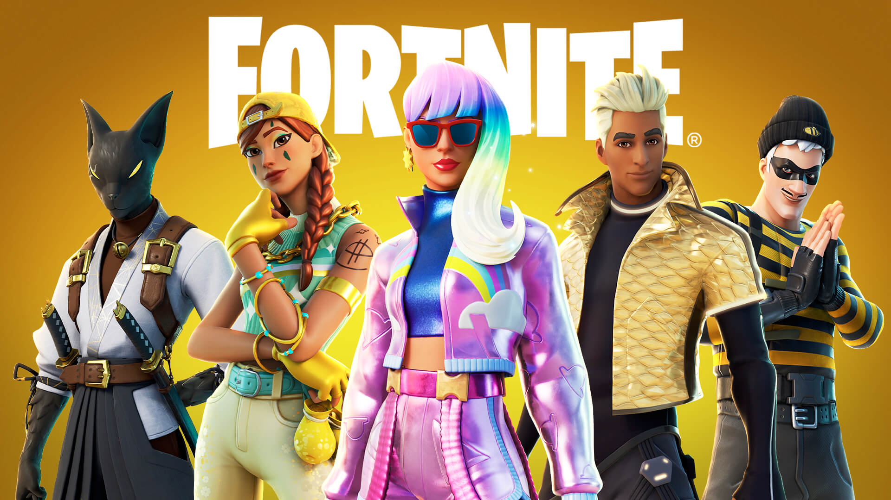

FORTNITE
About Fortnite
Fortnite is an online video game developed by Epic Games in 2017. It is a survival game where 100 players fight against each other in a player versus player combat to be the last one standing. It is a fast-paced, action-packed game, not unlike The Hunger Games, where strategic thinking is a must in order to survive. There are an estimated 125 million players on Fortnite.
Fortnite
Fortnite Game Modes
1. Fortnite: Save The World
Fortnite Save the World is a player-versus-environment cooperative game, with four players collaborating towards a common objective on various missions. The game is set after a fluke storm appears across Earth, causing 98% of the population to disappear, and the survivors to be attacked by zombie-like "husks". The players take the role of commanders of home base shelters, collecting resources, saving survivors, and defending equipment that helps to either collect data on the storm or to push back the storm. From missions, players are awarded a number of in-game items, which include hero characters, weapon and trap schematics, and survivors, all of which can be leveled up through gained experience to improve their attributes.
Fortnite: Save the world
2. Fortnite Battle Royale
Fortnite Battle Royale is a player-versus-player game for up to 100 players, allowing one to play alone, in a duo, or in a squad (usually consisting of three or four players). Weaponless players airdrop from a "Battle Bus" that crosses the game's map. When they land, they must scavenge for weapons, items, resources, and even vehicles while trying to stay alive and to attack and eliminate other players. Over the course of a round, the safe area of the map shrinks down in size due to an incoming toxic storm; players outside that threshold take damage and can be eliminated if they fail to quickly evacuate. This forces remaining players into tighter spaces and encourages player encounters. The last player, duo, or squad remaining is the winner.
Fortnite Battle Royale
3. Fortnite Creative
Fortnite Creative is a sandbox game mode, in which players are given complete freedom to spawn any item from the Battle Royale gamemode on a personal island, and can create games such as battle arenas, race courses, platforming challenges, and more.
Players can use their pickaxe to knock down existing structures on the map to collect basic resources that are wood, brick, and metal. Subsequently, in all modes, the player can use these materials to build fortifications, such as walls, floors, and stairs. Such fortification pieces can be edited to add things like windows or doors. The materials used have different durability properties and can be updated to stronger variants using more materials of the same type. Within Save the World this enables players to create defensive fortifications around an objective or trap-filled tunnels to lure husks through. In Battle Royale, this provides the means to quickly traverse the map, protect oneself from enemy fire, or to delay an advancing foe. Players are encouraged to be very inventive in designing their fortifications in Creative. While Battle Royale and Creative are free-to-play, Save the World is pay-to-play. The games are monetized through the use of V-Bucks, in-game currency that can be purchased with real-world funds, but also earned through completing missions and other achievements in Save the World. V-Bucks in Save the World can be used to buy loot boxes, in the form of piñatas shaped like llamas, to gain a random selection of items. In Battle Royale, V-Bucks can be used to buy cosmetic items like character models and the like or the game's battle pass, a tiered progression of customization rewards for gaining experience and completing certain objectives during the course of a Battle Royale season.